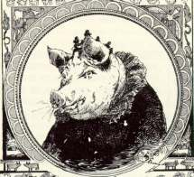
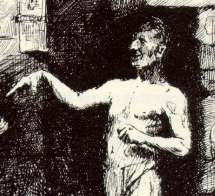
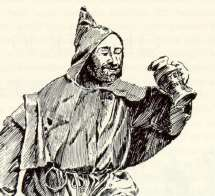
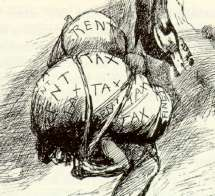
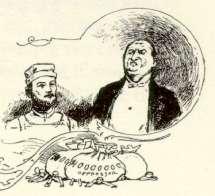
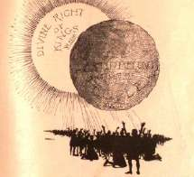
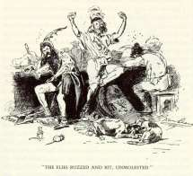

Illustrating the Yank |
 Connecticut Yankee was shorter than a subscription book was supposed to be, so its design took full advantage of Beard's pictures (and a generous amount of white space) to stretch its length. Although he had to work quickly to keep the book on deadline (according to Beard, the illustrations were produced in about 70 days), Beard's work displays a lot of wit, elegance and attention to both visual and thematic detail. One of the striking characteristics is the way the drawings feature many well-known 19th-century faces on the book's 6th-century characters. Beard's usual practice as an illustrator was to work from both live models and "a large collection of photographs" of contemporary celebrities and "prominent people." All MT's readers would have recognized the original of the sow at left, for example, though not all would have been amused. Clicking on her will take you to a gallery displaying Beard's drawings of famous people as characters in the novel, and the originals they are based on. |
 MT's original intention was to supervise Beard's work closely. Intending as always for the book to be as popular as possible, he was anxious about the points at which his story would rub up against contemporary beliefs, and as with Kemble's work on Huck Finn, he expected the illustrations to tone the book down: "I have aimed to put all the crudeness and vulgarity in the book," he wrote Beard, "and I depend on you for the refinement and scintillating humor for which you are so famous." But he liked the first samples Beard submitted so much that he decided to leave the artist alone to "obey his own inspiration" -- "I want his genius to be wholly unhampered." MT was delighted with the results. You can see a gallery of MT's favorite pictures by clicking here. After the novel was published, MT wrote an acquaintance that "to my mind the illustrations are better than the book -- which is a good deal for me to say, I reckon." |
 One of the themes MT was most anxious about was the novel's aggressive attack on religion: "an established church," Hank writes, "is an established slave pen." Although Hall told MT that "it was the Catholic Church that would principally attack [the novel], and they were not book buyers anyway," it was MT's design to downplay the book's anti-religious sentiments, to avoid, for example, including "any religious matter in the Prospectus" that his book agents would show prospective customers (see Sales Prospectus). Beard, however, was a member of the Society of Friends (the Quakers), and overtly hostile to the institutionalized Christianity. Many of his drawings rely on familiar American anti-Catholic stereotypes, as you can see by clicking on the cleric at left. |
|  Beard was also a staunch supporter of the "single-tax" political and economic program of contemporary reformer Henry George. His drawings not only enthusiastically reflect the novel's satire on various forms of aristocratic privilege; they also use MT's text as the occasion for giving visual expression to many of the ideas Beard found in George's book, Progress and Property. Click on the burdens at left for some examples of Beard's most explicitly political cartoons. |
 The artists whose pictures appeared on every second or third page inevitably shaped the way contemporary readers "saw" and understood the first editions of MT's texts. Uncharacteristically, MT was entirely pleased with Beard's work: "What luck it was to find you!" he told Beard; "There are a hundred artists who could illustrate any other book of mine, but there was only one who could illustrate this one." Yet Beard took large liberties in his drawings. Many of them don't illustrate anything that appears in the text, but instead extrapolate from MT's words various ideas that have to be considered Beard's own thematic contributions to Connecticut Yankee. Although MT gives Hank the nickname "Sir Boss," for example, Beard's drawings often equate the injustices of medieval feudalism with the patterns of late-nineteenth-century American capitalism. For some examples of Beard's most "un-authorized" illustrations, click on the robber baron at left. |
 Because MT wanted Connecticut Yankee to appear in time for the Christmas trade, the sales prospectus had to be prepared before Beard had finished many illustrations. Thus the passages from the novel included in the prospectus are unillustrated. But MT approved Hall's suggestion to include a 16-page "signature" of illustrations at the end of the prospectus. Hall promised MT the sampling did not include pictures of "anything that would apply directly to the church or that is strongly political, but whatever makes fun of royalty and nobility . . . we have put in, as that will suit the American public well." Hall himself, as "a help to agents in selling the book," wrote interpretive captions for each illustration, describing "whatever the picture is intended to represent." To see what pictures were selected, and how they were explained to MT's audience, click on the eclipse at left. |
 Dan Beard included himself at the Round Table: the figure in the middle at left is a self-portrait. He and MT wound up becoming friends, and MT employed him to illustrate a number of other texts, including The American Claimant, The Million Dollar Banknote, Tom Sawyer, Abroad and Following the Equator. Beard himself claimed, however, that most publishers and editors were reluctant to hire him after his critiques of Catholicism and capitalism appeared in Connecticut Yankee. According to him, "the influence of vested interests" produced what he called a "boycott" -- what we would call a blacklisting -- "for about ten years." Despite the revelry on display in his self-portrait, Beard also became the organizer of the American Boy Scouts, and served as National Scout Commissioner from 1910 until his death in 1941. |